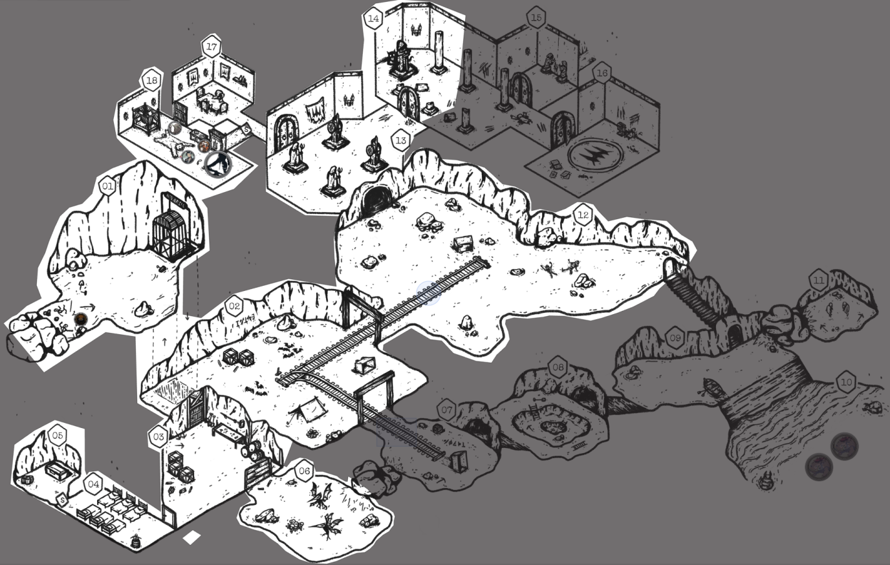
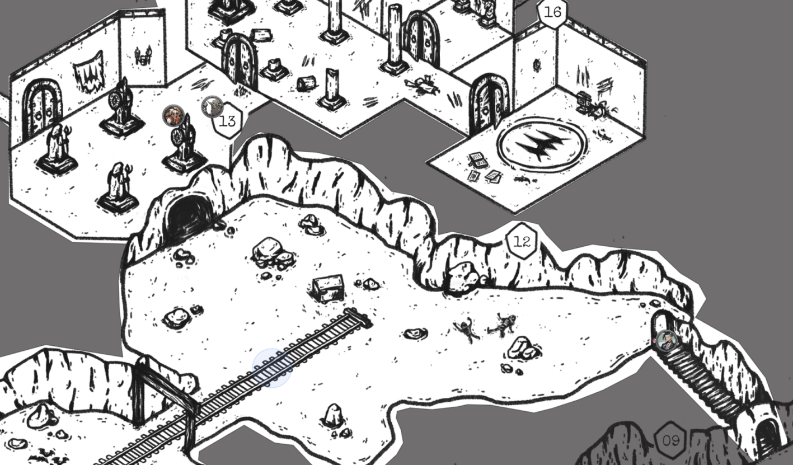
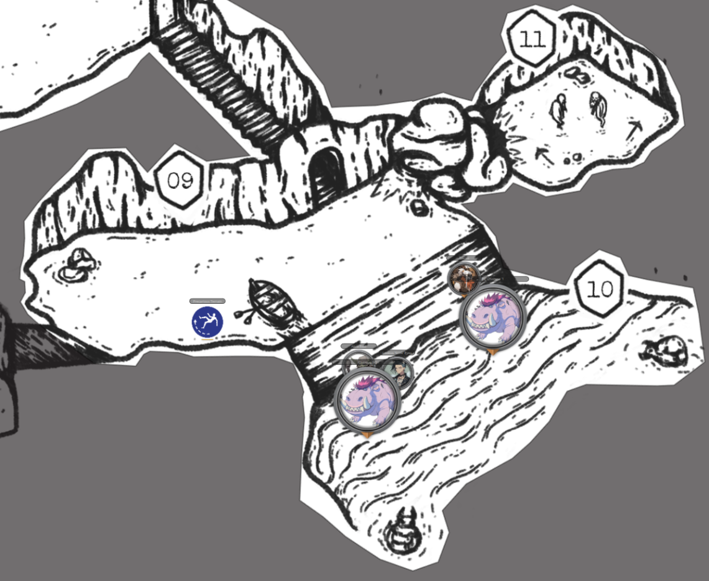

In this Episode 48 of BREAK!!: The Wandering Trio, the gang meets their greatest Adversary thus far - their own little demonic Goblin Abra being possessed - and also ride off the episode into the sunset like beautiful Disney Princesses.
Previous report here. Adventure Site taken from my adaptation of They Dug Too Deep, available within my one-shot book The Helical Expeditions!
Here was the last explored state of the map, and where we pick up from today:

Onwards to the report!
Dunking on the Creature…again
We begun the session with the gang having triggered the Creature Ambush once more with their Linger Action in the High Fleshmancer’s resting quarters. The Creature failed its Ambush then promptly got smoked by the party again with a Shadow Puppet. The Creature has a Shadowmeld Ability where it can blend into the shadows of a room and dodge abilities/attacks until it reaggresses. However, given the name and flavor, I ruled that Shadow Puppet was the perfect Ability to be able to target it still.
Despite being dunked on over and over, the players at least recognized its threat level when a single, unparried strike would have done 4 Hearts. This time, Gack got the final strike on the Creature with his rock mallet and was possessed with rage. Unlike the danger that Lookus possesses, Gack is just a mere Factotum and promptly missed all Attacks before being reasoned out of it.
Piecing together that they’re missing the key to why the Creature keeps reconstituting, they pressed on into Room 14. In this miniature cathedral-like room, rent apart by claws, Gack clocked the Amethyst Statue within seemingly wearing a gorgeous, if sundered, suit of Magnificent Superheavy Armor. The gang are some big hoarders and never let anything go so seeing the debacle of them figuring out how to balance inventory slots to fit this 5 Slot monster in Gack’s packs was amusing. It is worth a metric ton (650 Coins) so selling even in its Sundered state is a pretty penny. Lookus can technically wear it but is likely unwilling to give up his Fast speed.
Upon removing the armor from its statue, the magical Gargoyle underneath came to life and shot a jetstream of water towards Gack fruitlessly. Gack retorted with Charismatic Appeal (Negotiation), sighing with an over-it tone of “what the hell man, can we just like cool it?”. Set aback by the bluntness of the statement, the Gargoyle just kinda stood back and shrugged. There were some discussion with it, mimed on the part of the statue, about the nature of its job here and if it wanted to leave or chill. Opting for the latter, it resumed stone form and a combat was averted.
They made it into Room 15 (the secret exit/entrance) and, with Cautious Movements + some good Insight Checks, got essentially all the information needed to sus out the puzzle here…except that it were a secret door. They made the conclusion that the body was cut in-half via a closing portal, that no remnants of that portal remain, and that they are “quite done with cursed statues”. So, they turned tail and headed farther in. Thus, my genius scheme to tie their exit from the Adventure Site with the discovery of the Rings of Fleshwarp was foiled.
Containment Protocol? Oh no, we run.
Onwards, and into the primary ritual chamber they went (Room 16). Within, they witnessed the ritual sacrifice and slaughter of many a fleshwarper, the deep inset Calian runes in the ritual circle, and the stock of research notes that lay spread ‘round the Bloody Tome. Lured in by creepy magicks, Abra immediately picked up the Bloody Tome to flip through it - no safety checks made beforehand. I believe earlier this session after Gack got possessed they all had joked at how bad it’d be for Abra to be possessd given his penchant for both violent and controlling magic. Well, turns out holding the tome that is the anchor for the Creature’s existence indeed prompts a Grit Check to resist being possessed.
Abra’s already creepy visage of an vertically-elongated 6ft tall Goblin with milky-white eyes and serrated teeth (…read earlier posts for the context) lent to a lovely horror scene of his head snapping back towards the group with bleeding crimson eyes. The gang’s concern immediately turned to a frenzied panic when Abra dropped a Mana Bomb at their feet. Lookus bolted to Room 13 while Gack got into Room 12 with his new The Better Part of Valor leaping ability. The unfortunate thing for Gack is that we have previously established Room 12 is liable to a Falling Debris Trap if loud noises or vibrations were to occur. Thus, the bomb went off and caused a collapse. Gack (rather stupidly) choose to Jump as his reaction, resulting in his failure and his armor being destroyed.
Hearing the grating sounds of Abra’s ferrous frame echoing down the marble halls, Lookus and Gack continued to sprint away into the staircase under Room 12, setting up a sniper’s nest if Abra were to come out, still possessed. Lucky for all, Abra managed to resist the effect only 1 Turn later. Feeling abandoned, Abra sat down in Room 13 and had the clever idea to use Grand Grimoire to copy the Bloody Tome’s contents without physically touching the book. So, ah, now Abra has a Forgotten Tome’s worth of Calian knowledge on creating blood demons, Fleshwarping, and blood-material soul infusion. Lovely. He cannot understand it just yet as it is written in Dark Tongue, but it is safe in his grimoire.
The others sat in horrified stasis for a few minutes with no show of Abra before Gack eventually braved the room, walking in “like a parent who just yelled at their child and is now awkwardly walking into their room.” Eventually, they all reconvened before making the wise decision to destroy the tome. A wise decision was turned rather unwise when Lookus shot the book point-blank, with everyone stood next to it. Being a book formed of ritual sacrifice and soul binding, its destruction led to a rush of freed souls pouring out - prompting a Dark Apparitions CLICK! Trap. Everyone hit the deck, appropriately, but Abra failed and became Dispirited.

A Fairy Tale Ride
This became a bit for the remainder of the episode where Gack and Lookus couldn’t emotionally understand Abra’s Dispiritment, so they just stored him in Gack’s Pack and moved onto Room 09. In this watery, shimmering chamber they clocked the silhouettes of the Water Chompas lurking in the water, the ruined boat (poor luck check), and the soft sounds of goblins screaming in Room 11.
With Gack’s rock mallet and Supernatural Might, they Lingered to clear the collapse into Room 11. The Creature gone and the Water Chompas rolling a pacifist mood, nothing assailed them. In Room 11, they were blinded by an intense sunlight, emanating from their sought-after Star Gem, and found the source of the screams - the lingering spirits of two Swamp Goblins. Not understanding they were already dead, they profusely thanked the party for the rescue and offered up the Star Gem as their reward. They had stolen it off Spruck when the Creature appeared, seeing how it recoiled away from it, and hid in Room 11. Unfortunately for them, a cave-in happened and so they were trapped within.
Not illuminating the goblins on their deaths, the gang half-assed offered to escort them back to the Den. This was all in vain, however, as Gack put the Star Gem in his pack, snuffing its light out…and disipating the spirits who relied on it. Panicked, Gack took the Star Gem out again, realizing he “killed them”. A second Dispiritment of the day was dodged.
With a moment to breathe, Lookus decided to take a second to emotionally process that Abra felt abandoned after they had left him instead of attempting to help end his possession, and needed some comforting. Despite an absolutely shit cheer-up speech (group voted as such), Lookus managed to clear Abra’s Dispirited condition on a Snagged Aura Check.
Everyone collectively sick of this place, they figured their best shot out of here was seeing where this underground river led. Boat destroyed, Abra yelled at the submerged Water Chompas to come to the shore, intimidating them (Negotiation). Successful with the use of his Fellowmark Charm, the taken aback Chompas rocked up. Abra explained his shitty day and need for a ride out, bonding over a fear of abandonment. The Chompas agreed, and offered their backs to the group. To Lookus and Gack, it just appeared that Abra was animalistically growling at the Chompa.

In no way had I planned this, of course, but it was a sweet use of the Trinket and Negotiation rolls. So, like beautiful Disney Princesses, the gang gently rode out of the accursed mine and back out into the Spirits’ Grove through a plant-covered river exit. Along the way, Abra spoke with the Chompas about friendship and the meaning of life. The Chompas dropped them off to a riverbank just before the rivers turn toxic, and they set up camp for the night.
Realizing they left Kadabra, the unnamed Guide, and Dirt at the entrance of the mine still, they decided they’ll grab them after their rest and head back to the Den. And that’s where we ended, ready for the corrupted Grove once more.
Next Steps
One might naturally ask, well what about the Rings of Fleshwarp? That’s a good question! I didn’t want it hamfisted into the Chompa scene or placed non-chalantly somewhere with no purpose. They know they exist and were supposed to be within a Calian Fleshwarper’s ruins in the Grove, so they were curious why they weren’t in this Site. To explain where I might place them next requires explaining what they are planning to do next.
Lookus has the suspicion that the Star Gem can be manipulated to charge the inert Gleysian Mask of Tangibility. I have no specific solution to this so, sure, that sounds plausible to me. I might lightly suggest to them that the Star Gem and Den’s Great Computer could be combined to perform this very function - as the computer is made of a similar material. There are other great energy sources on the island that can suffice, and I’ll leave it up to them to surprise me.
Regardless of how they charge it, the result will mean they have an item that renders the immortal Creatures of Ynn (and, by extension, other Elsewheres) tangible, and vulnerable to permanent destruction. Thus, on activation, the ball starts rolling on them gearing up to take down the Ynn hierarchy: the Rose That Pricks -> Skippi -> the Idea of Thorns.
After the Den, they want to head back to Elix to either 1) find out how to strengthen the Evergrove Barrier or 2) make a stand to defend her if the Barrier falls - their thought process being “well if our enemy can just teleport in shadows, we may as well wait where their last target is.” I dig that, and it is wise. To raise the stakes on when the Barrier will fall, I’m going to introduce a decaying Resource Die roll per day (the whole d8 -> d6 -> d4 on a 1 idea from…some other system idk) where on the last roll, the Barrier falls. I’ll probably just lie and say I’ve been doing that in the background from a d20 this whole time because they enjoy those sorts of reveals. Before they discovered that Taam was “safe” under the Idea’s possession until the Ascension Ritual, I would casually remark on a “Taam dies clock” which always stressed them out.
So, depending on their luck, they might either strengthen the Barrier in time (setting the Idea’s plan back quite a bit), have to defend it, or arrive back too late with a taken Elix. I like this because it vastly affects their preparation for the final arc, i.e., whether they’ll have a buffer to plan and prep or simpy have to rush ahead to prevent the Ascension Ritual.
To bring it back to the Rings from paragraphs ago, at some point, the Rose That Pricks will helm an attack on Evergrove. Again, depending on their Resource Die, that might be at the party themselves during travel or the Evergrove itself. My thought is that to travel around quickly, it is not simply “shadow” the creatures of Ynn travel between but, in actuality, by using these Rings of Fleshwarp. That’s why there is not a massive onslaught of Ynn Creatures around the island, because these Rings were found in limited supply and can only teleport so many with them. So, when the Rose That Pricks is defeated, they’ll find the a Ring on her - now tangible - corpse, opening up their travel options.
Anyways, that’s a lot of rambling on what might not even happen. Nice to plan out, though! I’m excited for this next leg of the journey, and gearing up to the finale - whether that be fighting on the backfoot or on their terms.
Conclusion
Overall, the Adventure Site was a blast and I think the vibes were great with the layered audio and diversity of encounters within. Got a whole four sessions out of it, and conveniently aligned with them achieving Rank 9 by its end.
We got into the rhythm of the Exploration Rules by the second session and it was smooth from there on out. If you stick very strictly to the rule flowchart, it can feel a tad game-y at times, but I think it is a necessary bounds for keeping the Site crawling pace moving and, once you got the flow, you can relax it for specific scenes as needed. It is a very enjoyable mindset/play shift when you get into an Adventure Site, though, and I’m excited to explore it more in START and my own written adventures!
As always, I appreciate you reading - and dare I say enjoying - these ramblings!
Comments